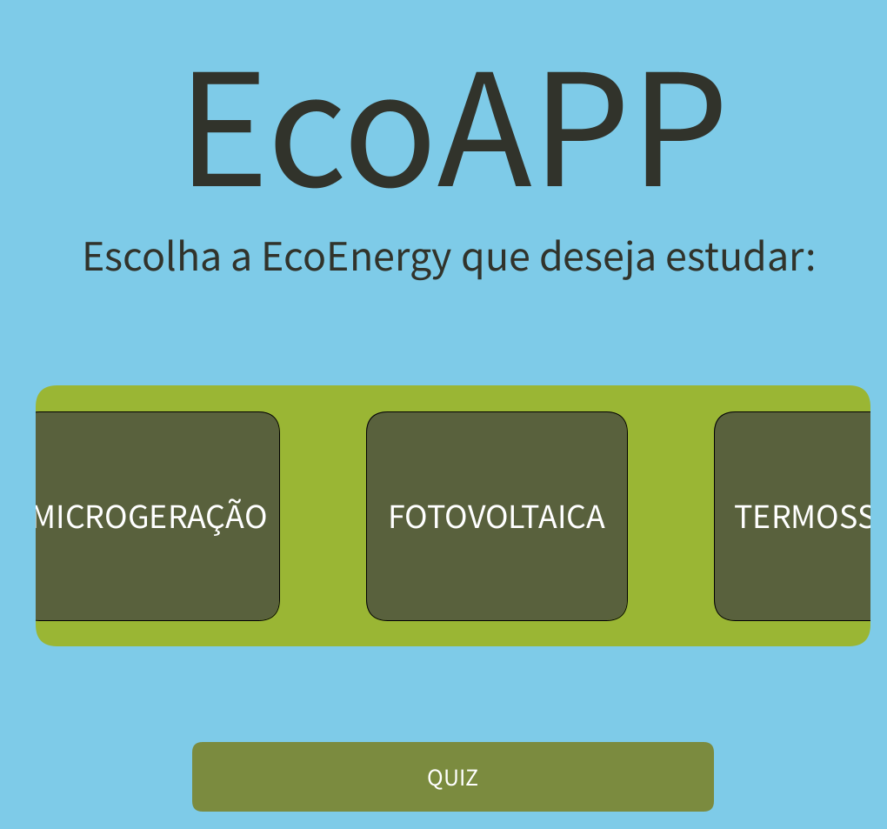

Ricardo Magno Yomura

Trabalhos em destaque do primeiro semestre
raciocínio algorítmico
Na imagem é possível ver uma parte do programa do TDE 7 que simula uma maquina de vendas, aberto no py.charm.
fundamentos de sistemas ciberfisícos
Este trabalho consiste em utilizar o ESP-32 para simular um fogão inteligente que identifica vazamento de gás e possíveis incêndios.
filosofia
Este TDE contempla temas abordados em aula e compara com a realidade quando entrevistamos nosso convidado. (TDE parte 1)
experiência criativa
A imgem mostra um projeto de APP ecológico que visa informar sobre diferentes tipos de energias sustentáveis e suas vantagens.

resolução de problemas com lógica matemática
Lista 6 questão 2
Aqui está um exemplo de como são feitas as listas e como trabalhamos sequências lógicas: